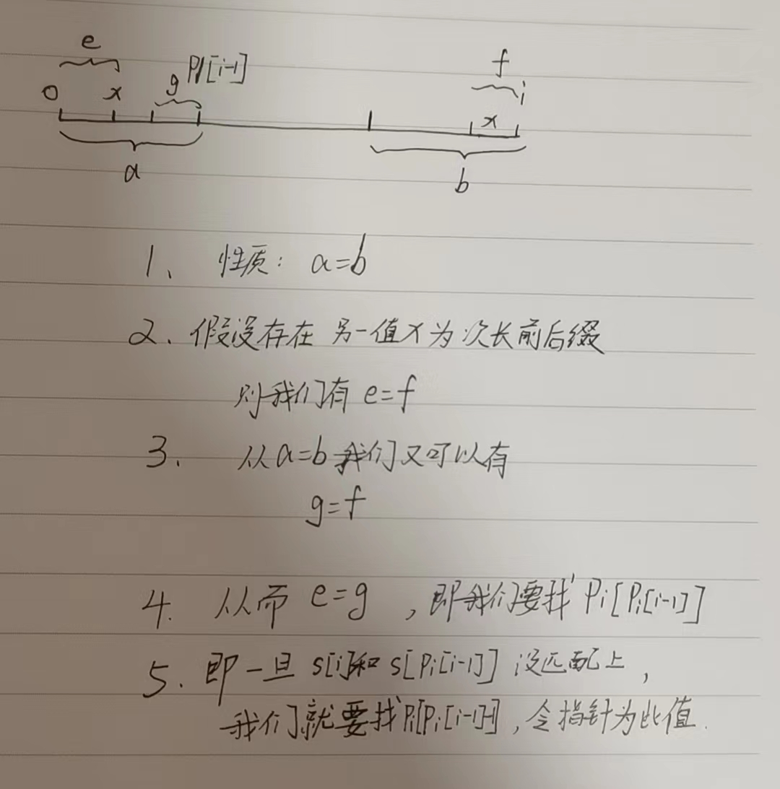

简单记录一下LC相关模版, 方便后续看到类似的题目好处理. 主要针对近期看到的以前没用过的东西, 也包括一些图论相关.
字符串
字符串相关还是有不少相关知识和算法的
z函数
区别kmp对前后缀匹配: 前指针i, 后指针j, 找i往后,j往前的最长匹配
z函数是从前往后的匹配: 前指针i, 后指针j, 找i往后,j往后的最长匹配
一些例子
- z(aaaaa) = [0, 4, 3, 2, 1]
- z(aaabaab) = [0, 2, 1, 0, 2, 1, 0]
- z(abacaba) = [0, 0, 1, 0, 3, 0, 1]
原理
本质是开了一个数组和一个动窗口, 然后依据动窗口里面的信息做流程简化.
动窗口表示截止目前最长的匹配, 如果i落入窗口(zbox), 那么z[i]的最大值一定小于等于z[i-l]和r-i+1.
其中z[i-l]表示窗口匹配去掉s[l:i]这部分, 然后r-i+1是到右窗口的最大距离.
题目
3303. 第一个几乎相等子字符串的下标
给你两个字符串 s 和 pattern 。
如果一个字符串 x 修改
至多 一个字符会变成
y ，那么我们称它与 y
几乎相等 。
请你返回 s 中下标 最小 的子字符串，它与
pattern 几乎相等 。如果不存在，返回
-1 。
子字符串 是字符串中的一个 非空、连续的字符序列。
示例 1：
输入：s = "abcdefg", pattern = "bcdffg"
输出：1
解释：
将子字符串 s[1..6] == "bcdefg" 中 s[4] 变为
"f" ，得到 "bcdffg" 。
示例 2：
输入：s = "ababbababa", pattern = "bacaba"
输出：4
解释：
将子字符串 s[4..9] == "bababa" 中 s[6] 变为
"c" ，得到 "bacaba" 。
示例 3：
输入：s = "abcd", pattern = "dba"
输出：-1
示例 4：
输入：s = "dde", pattern = "d"
输出：0
提示：
1 <= pattern.length < s.length <= 105s和pattern都只包含小写英文字母。
进阶：如果题目变为 至多 k 个 连续 字符可以被修改，你可以想出解法吗？https://leetcode.cn/problems/find-the-occurrence-of-first-almost-equal-substring/description/
1 | class Solution: |
字典树
本质很简单, 就是字符的前缀树, 每个node带有is_end标记表示是否是字符串结尾.
关键部分是构造函数和insert函数
415周赛第三题就可以字典树加记忆化搜索过.
3291. 形成目标字符串需要的最少字符串数 I
给你一个字符串数组 words 和一个字符串
target。
如果字符串 x 是 words 中
任意 字符串的前缀，则认为 x 是一个
有效 字符串。
现计划通过 连接 有效字符串形成 target
，请你计算并返回需要连接的 最少
字符串数量。如果无法通过这种方式形成 target，则返回
-1。
示例 1：
输入： words = ["abc","aaaaa","bcdef"], target = "aabcdabc"
输出： 3
解释：
target 字符串可以通过连接以下有效字符串形成：
words[1]的长度为 2 的前缀，即"aa"。
words[2]的长度为 3 的前缀，即"bcd"。
words[0]的长度为 3 的前缀，即"abc"。
示例 2：
输入： words = ["abababab","ab"], target = "ababaababa"
输出： 2
解释：
target 字符串可以通过连接以下有效字符串形成：
words[0]的长度为 5 的前缀，即"ababa"。
words[0]的长度为 5 的前缀，即"ababa"。
示例 3：
输入： words = ["abcdef"], target = "xyz"
输出： -1
提示：
1 <= words.length <= 1001 <= words[i].length <= 5 * 103- 输入确保
sum(words[i].length) <= 105。 words[i]只包含小写英文字母。1 <= target.length <= 5 * 103target只包含小写英文字母。
https://leetcode.cn/problems/minimum-number-of-valid-strings-to-form-target-i/description/
1 | # https://leetcode.cn/problems/minimum-number-of-valid-strings-to-form-target-i/solutions/2918047/zi-dian-shu-ji-yi-hua-sou-suo-bao-li-fan-6mjw |
KMP
解决问题: 从一个string里面找到所有的substring的匹配.
前缀函数
前置问题: 前缀函数, 求到索引i的最长相等前后缀
举例来说，对于字符串 abcabcd，
pi[0]=0，因为 a 没有真前缀和真后缀，根据规定为 0
pi[1]=0，因为 ab 无相等的真前缀和真后缀
pi[2]=0，因为 abc 无相等的真前缀和真后缀
pi[3]=1，因为 abca 只有一对相等的真前缀和真后缀：a，长度为 1
pi[4]=2，因为 abcab 相等的真前缀和真后缀只有 ab，长度为 2
pi[5]=3，因为 abcabc 相等的真前缀和真后缀只有 abc，长度为 3
pi[6]=0，因为 abcabcd 无相等的真前缀和真后缀
同理可以计算字符串 aabaaab 的前缀函数为 [0, 1, 0, 1, 2, 2, 3]。
直观暴力解
不需要多说, 最暴力的解法, O(n^3)
1 | def prefix_function(s): |
优化1
i每次增加1, 那么最优情况pi增加1, 所以直接从pi[i]倒序即可.
1 | def prefix_function(s): |
dp
注意到s[pi[i-1]] == s[i]的时候我们直接pi[i] = pi[i-1] + 1即可.
如果不等的话呢? 注意, 即使不等的情况下, s[0]到s[pi[i-1]]这个串依旧是s[i-1-pi[i-1]]到s[i-1]的最长匹配前后缀.
我们假设pi[i]为x, 假设我们最后找到了目标值, 我们有s[0]到s[x]和s[i-1-x]到s[i-1]相等, 此时

由此我们有了第三版
1 | def prefix_function(s): |
KMP
有了前缀函数, KMP就很好理解了
我们前缀函数可以求出任意位置最长前缀.
那么字符串t中对子字符串s的包含可以转化为s+t中寻找最大前缀为t的位置.(注意s和t中间加分隔符)
1 | def find_occurrences(t, s): |
AC自动机
解决多模式匹配问题, 其本质为对Trie的字符串匹配, 不过匹配失败的时候会依据fail指针进行跳转, 从而对字符串进行一次扫描就可以记录所有待检测子字符串.
贴一个灵神的代码
1 | # 从根到 node 的字符串是某个（某些）words[i] 的前缀 |
单调队列
解决动窗口最大值问题
239. 滑动窗口最大值
给你一个整数数组
nums，有一个大小为 k 的滑动窗口从数组的最左侧移动到数组的最右侧。你只可以看到在滑动窗口内的
k 个数字。滑动窗口每次只向右移动一位。
返回 滑动窗口中的最大值 。
示例 1：
输入：nums = [1,3,-1,-3,5,3,6,7], k = 3
输出：[3,3,5,5,6,7]
解释： 滑动窗口的位置 最大值
--------------- -----
[1 3 -1] -3 5 3 6 7 3
1 [3 -1 -3] 5 3 6 7 3
1 3 [-1 -3 5] 3 6 7 5
1 3 -1 [-3 5 3] 6 7 5
1 3 -1 -3 [5 3 6] 7 6
1 3 -1 -3 5 [3 6 7] 7
示例 2：
输入：nums = [1], k = 1
输出：[1]
提示：
1 <= nums.length <= 105-104 <= nums[i] <= 1041 <= k <= nums.length
https://leetcode.cn/problems/sliding-window-maximum/description/
1 | class Solution: |
2398. 预算内的最多机器人数目
你有 n 个机器人，给你两个下标从
0 开始的整数数组 chargeTimes
和 runningCosts ，两者长度都为 n 。第 i 个机器人充电时间为 chargeTimes[i] 单位时间，花费 runningCosts[i] 单位时间运行。再给你一个整数 budget 。
运行 k 个机器人
总开销 是 max(chargeTimes) + k * sum(runningCosts) ，其中 max(chargeTimes) 是这 k 个机器人中最大充电时间，sum(runningCosts) 是这
k 个机器人的运行时间之和。
请你返回在 不超过 budget 的前提下，你
最多 可以
连续 运行的机器人数目为多少。
示例 1：
输入：chargeTimes = [3,6,1,3,4], runningCosts =
[2,1,3,4,5], budget = 25
输出：3
解释：
可以在 budget 以内运行所有单个机器人或者连续运行 2 个机器人。
选择前 3 个机器人，可以得到答案最大值 3 。总开销是 max(3,6,1) + 3 *
sum(2,1,3) = 6 + 3 * 6 = 24 ，小于 25 。
可以看出无法在 budget 以内连续运行超过 3 个机器人，所以我们返回 3 。
示例 2：
输入：chargeTimes = [11,12,19], runningCosts =
[10,8,7], budget = 19
输出：0
解释：即使运行任何一个单个机器人，还是会超出
budget，所以我们返回 0 。
提示：
chargeTimes.length == runningCosts.length == n1 <= n <= 5 * 1041 <= chargeTimes[i], runningCosts[i] <= 1051 <= budget <= 1015
1 | class Solution: |
树状数组
解决可变前缀和问题
1395. 统计作战单位数
n 名士兵站成一排。每个士兵都有一个
独一无二 的评分 rating 。
从中选出 3 个士兵组成一个作战单位，规则如下：
- 从队伍中选出下标分别为
i、j、k的 3 名士兵，他们的评分分别为rating[i]、rating[j]、rating[k]
- 作战单位需满足：
rating[i] < rating[j] < rating[k]或者rating[i] > rating[j] > rating[k]，其中0 <= i < j < k < n
请你返回按上述条件组建的作战单位的方案数。
示例 1：
输入：rating = [2,5,3,4,1]
输出：3
解释：我们可以组建三个作战单位
(2,3,4)、(5,4,1)、(5,3,1) 。
示例 2：
输入：rating = [2,1,3]
输出：0
解释：根据题目条件，我们无法组建作战单位。
示例 3：
输入：rating = [1,2,3,4]
输出：4
提示：
n == rating.length3 <= n <= 10001 <= rating[i] <= 10^5rating中的元素都是唯一的
https://leetcode.cn/problems/count-number-of-teams/solutions/1460260/by-flix-3lu9/
不算很困难, 但是解法却很多, 除了我自己想出来的暴力, 每个都比我想的好.
『 一题四解 』 暴力枚举 + 有序数组 + 树状数组 + 线段树
- 暴力
1 | class Solution: |
- SortedList
1 | from sortedcontainers import SortedList |
树状数组是一种支持单点修改和区间查询的代码量最小的数据结构,具体可以点上面的wiki看.
这里也可以用树状数组来做.
存数字的rank的前缀和, query[rank-1]的数值表示在这个数前面小于rank的数字数量, 而i - sm1就是在这个数前面且大于这个数的数量, rank表示总共小于这个数的数量, 所以可以推出在这个数后面小于这个数的数量和大于这个数的数量.
1 | class Solution: |
同样, 树状数组可以做的题, 线段树也可以.
1 | class Solution: |
线段树
699. 掉落的方块
在二维平面上的 x 轴上，放置着一些方块。
给你一个二维整数数组 positions ，其中
positions[i] = [lefti, sideLengthi] 表示：第 i
个方块边长为 sideLengthi ，其左侧边与 x
轴上坐标点 lefti 对齐。
每个方块都从一个比目前所有的落地方块更高的高度掉落而下。方块沿 y 轴负方向下落，直到着陆到 另一个正方形的顶边 或者是 x 轴上 。一个方块仅仅是擦过另一个方块的左侧边或右侧边不算着陆。一旦着陆，它就会固定在原地，无法移动。
在每个方块掉落后，你必须记录目前所有已经落稳的 方块堆叠的最高高度 。
返回一个整数数组 ans ，其中 ans[i] 表示在第
i 块方块掉落后堆叠的最高高度。
示例 1：

输入：positions = [[1,2],[2,3],[6,1]]
输出：[2,5,5]
解释：
第 1 个方块掉落后，最高的堆叠由方块 1 组成，堆叠的最高高度为 2 。
第 2 个方块掉落后，最高的堆叠由方块 1 和 2 组成，堆叠的最高高度为 5
。
第 3 个方块掉落后，最高的堆叠仍然由方块 1 和 2 组成，堆叠的最高高度为 5
。
因此，返回 [2, 5, 5] 作为答案。
示例 2：
输入：positions = [[100,100],[200,100]]
输出：[100,100]
解释：
第 1 个方块掉落后，最高的堆叠由方块 1 组成，堆叠的最高高度为 100
。
第 2 个方块掉落后，最高的堆叠可以由方块 1 组成也可以由方块 2
组成，堆叠的最高高度为 100 。
因此，返回 [100, 100] 作为答案。
注意，方块 2 擦过方块 1 的右侧边，但不会算作在方块 1 上着陆。
提示：
1 <= positions.length <= 10001 <= lefti <= 1081 <= sideLengthi <= 106
https://leetcode.cn/problems/falling-squares/description/?envType=daily-question&envId=2024-07-28
听说过但是没写过, 看到这个题第一眼感觉好像是线段树, 但是从来没写过. 找了个板子, 做个记录. 其中pushdown是用父节点的add来更新子节点, 写成方法方便递归的时候顺便调用来维护子节点和父节点一致, pushup则是用子节点更新父节点, 与pushdown类似.
1 | # https://leetcode.cn/problems/falling-squares/solutions/2859880/python3javacgotypescript-yi-ti-yi-jie-xi-ju2s |
也存在二分做法, 用一个列表维护区间, 一个列表维护高度.
1 | # https://leetcode.cn/problems/falling-squares/solutions/2859890/er-fen-chu-li-ji-jian-shu-xing-dai-ma-by-ezgn |
差分数组
第一次见, 先熟悉一下.
1094. 拼车
车上最初有 capacity 个空座位。车 只能 向一个方向行驶（也就是说，不允许掉头或改变方向）
给定整数 capacity 和一个数组 trips ,
trip[i] = [numPassengers_i, from_i, to_i] 表示第
i
次旅行有 numPassengers_i 乘客，接他们和放他们的位置分别是 from_i 和 to_i 。这些位置是从汽车的初始位置向东的公里数。
当且仅当你可以在所有给定的行程中接送所有乘客时，返回 true，否则请返回
false。
示例 1：
输入：trips = [[2,1,5],[3,3,7]], capacity = 4
输出：false
示例 2：
输入：trips = [[2,1,5],[3,3,7]], capacity = 5
输出：true
提示：
1 <= trips.length <= 1000trips[i].length == 31 <= numPassengersi <= 1000 <= fromi < toi <= 10001 <= capacity <= 105
https://leetcode.cn/problems/car-pooling/description/
明确一点, 原数组某一段子数组同增同减某个数字可以看作差分数组首位的变化.
具体可以看【算法小课堂】差分数组（附题单）Python/Java/C++/Go/JS/Rust
这里通过记录某节点的增减, 直接构造差分数组, 然后从差分数组还原原数组, 判断所有节点是否超过capacity.
1 | class Solution: |
100329. 使数组等于目标数组所需的最少操作次数
给你两个长度相同的正整数数组 nums 和
target。
在一次操作中，你可以选择 nums
的任何子数组，并将该子数组内的每个元素的值增加或减少 1。
返回使 nums 数组变为 target 数组所需的
最少 操作次数。
示例 1：
输入： nums = [3,5,1,2], target = [4,6,2,4]
输出： 2
解释：
执行以下操作可以使 nums 等于 target：
- nums[0..3] 增加 1，nums = [4,6,2,3]。
- nums[3..3] 增加 1，nums = [4,6,2,4]。
示例 2：
输入： nums = [1,3,2], target = [2,1,4]
输出： 5
解释：
执行以下操作可以使 nums 等于 target：
- nums[0..0] 增加 1，nums = [2,3,2]。
- nums[1..1] 减少 1，nums = [2,2,2]。
- nums[1..1] 减少 1，nums = [2,1,2]。
- nums[2..2] 增加 1，nums = [2,1,3]。
- nums[2..2] 增加 1，nums = [2,1,4]。
提示：
1 <= nums.length == target.length <= 1051 <= nums[i], target[i] <= 108
https://leetcode.cn/problems/minimum-operations-to-make-array-equal-to-target/description/
同样是对子数组处理, 我们可以直接构造差分数组, 然后前面每有值加一就可以免费让后面值减一, 最终结果是所有正数和和所有负数和的绝对值里面取.
1 | class Solution: |
并查集
721. 账户合并
给定一个列表 accounts，每个元素
accounts[i] 是一个字符串列表，其中第一个元素
accounts[i][0] 是 名称 (name)，其余元素是
emails 表示该账户的邮箱地址。
现在，我们想合并这些账户。如果两个账户都有一些共同的邮箱地址，则两个账户必定属于同一个人。请注意，即使两个账户具有相同的名称，它们也可能属于不同的人，因为人们可能具有相同的名称。一个人最初可以拥有任意数量的账户，但其所有账户都具有相同的名称。
合并账户后，按以下格式返回账户：每个账户的第一个元素是名称，其余元素是 按字符 ASCII 顺序排列 的邮箱地址。账户本身可以以 任意顺序 返回。
示例 1：
输入：accounts = [["John", "johnsmith@mail.com",
"john00@mail.com"], ["John", "johnnybravo@mail.com"], ["John",
"johnsmith@mail.com", "john_newyork@mail.com"], ["Mary",
"mary@mail.com"]]
输出：[["John", 'john00@mail.com',
'john_newyork@mail.com', 'johnsmith@mail.com'], ["John",
"johnnybravo@mail.com"], ["Mary", "mary@mail.com"]]
解释：
第一个和第三个 John 是同一个人，因为他们有共同的邮箱地址
"johnsmith@mail.com"。
第二个 John 和 Mary
是不同的人，因为他们的邮箱地址没有被其他帐户使用。
可以以任何顺序返回这些列表，例如答案
[['Mary'，'mary@mail.com']，['John'，'johnnybravo@mail.com']，
['John'，'john00@mail.com'，'john_newyork@mail.com'，'johnsmith@mail.com']]
也是正确的。
示例 2：
输入：accounts =
[["Gabe","Gabe0@m.co","Gabe3@m.co","Gabe1@m.co"],["Kevin","Kevin3@m.co","Kevin5@m.co","Kevin0@m.co"],["Ethan","Ethan5@m.co","Ethan4@m.co","Ethan0@m.co"],["Hanzo","Hanzo3@m.co","Hanzo1@m.co","Hanzo0@m.co"],["Fern","Fern5@m.co","Fern1@m.co","Fern0@m.co"]]
输出：[["Ethan","Ethan0@m.co","Ethan4@m.co","Ethan5@m.co"],["Gabe","Gabe0@m.co","Gabe1@m.co","Gabe3@m.co"],["Hanzo","Hanzo0@m.co","Hanzo1@m.co","Hanzo3@m.co"],["Kevin","Kevin0@m.co","Kevin3@m.co","Kevin5@m.co"],["Fern","Fern0@m.co","Fern1@m.co","Fern5@m.co"]]
提示：
1 <= accounts.length <= 10002 <= accounts[i].length <= 101 <= accounts[i][j].length <= 30accounts[i][0]由英文字母组成accounts[i][j] (for j > 0)是有效的邮箱地址
https://leetcode.cn/problems/accounts-merge/description/?envType=daily-question&envId=2024-07-21
见过并查集, 但是没完全理解. 这里邮箱之间可以建立连接关系, 所以可以用并查集, 并查集可以缩短路径减少查找时间.
1 | class UnionFind: |
图
tarjan
1568. 使陆地分离的最少天数
给你一个大小为 m x n ，由若干 0 和
1 组成的二维网格 grid ，其中 1
表示陆地， 0 表示水。岛屿
由水平方向或竖直方向上相邻的 1 （陆地）连接形成。
如果 恰好只有一座岛屿 ，则认为陆地是 连通的 ；否则，陆地就是 分离的 。
一天内，可以将 任何单个
陆地单元（1）更改为水单元（0）。
返回使陆地分离的最少天数。
示例 1：

输入：grid = [[0,1,1,0],[0,1,1,0],[0,0,0,0]]
输出：2
解释：至少需要 2 天才能得到分离的陆地。
将陆地 grid[1][1] 和 grid[0][2] 更改为水，得到两个分离的岛屿。
示例 2：

输入：grid = [[1,1]]
输出：2
解释：如果网格中都是水，也认为是分离的 ([[1,1]] ->
[[0,0]])，0 岛屿。
提示：
m == grid.lengthn == grid[i].length1 <= m, n <= 30grid[i][j]为0或1
可以很简单, 直接当岛屿数量来做, 然后枚举所有1, 一旦成功返回1, 否则返回2.
也可以很难, 需要用到tarjan算法.
1 | # https://leetcode.cn/problems/minimum-number-of-days-to-disconnect-island/solutions/2754484/tarjansuan-fa-mo-ban-ti-qiu-qiang-lian-t-41ve |
拓扑排序
2392. 给定条件下构造矩阵
给你一个 正 整数 k ，同时给你：
- 一个大小为
n的二维整数数组rowConditions，其中rowConditions[i] = [abovei, belowi]和
- 一个大小为
m的二维整数数组colConditions，其中colConditions[i] = [lefti, righti]。
两个数组里的整数都是 1 到 k 之间的数字。
你需要构造一个 k x k 的矩阵，1 到 k 每个数字需要 恰好出现一次 。剩余的数字都是 0 。
矩阵还需要满足以下条件：
- 对于所有
0到n - 1之间的下标i，数字abovei所在的 行 必须在数字belowi所在行的上面。
- 对于所有
0到m - 1之间的下标i，数字lefti所在的 列 必须在数字righti所在列的左边。
返回满足上述要求的 任意 矩阵。如果不存在答案，返回一个空的矩阵。
示例 1：

输入：k = 3, rowConditions = [[1,2],[3,2]],
colConditions = [[2,1],[3,2]]
输出：[[3,0,0],[0,0,1],[0,2,0]]
解释：上图为一个符合所有条件的矩阵。
行要求如下：
- 数字 1 在第 1 行，数字 2 在第
2 行，1 在 2 的上面。
- 数字 3 在第 0 行，数字 2 在第
2 行，3 在 2 的上面。
列要求如下：
- 数字 2 在第 1 列，数字 1 在第
2 列，2 在 1 的左边。
- 数字 3 在第 0 列，数字 2 在第
1 列，3 在 2 的左边。
注意，可能有多种正确的答案。
示例 2：
输入：k = 3, rowConditions =
[[1,2],[2,3],[3,1],[2,3]], colConditions = [[2,1]]
输出：[]
解释：由前两个条件可以得到 3 在 1
的下面，但第三个条件是 3 在 1 的上面。
没有符合条件的矩阵存在，所以我们返回空矩阵。
提示：
2 <= k <= 4001 <= rowConditions.length, colConditions.length <= 104rowConditions[i].length == colConditions[i].length == 21 <= abovei, belowi, lefti, righti <= kabovei != belowilefti != righti
https://leetcode.cn/problems/build-a-matrix-with-conditions/description/
可以回想之前课程表那些题, 也是拓扑排序.
1 | class Solution: |
floyd算法
2959. 关闭分部的可行集合数目
一个公司在全国有
n 个分部，它们之间有的有道路连接。一开始，所有分部通过这些道路两两之间互相可以到达。
公司意识到在分部之间旅行花费了太多时间，所以它们决定关闭一些分部（也可能不关闭任何分部），同时保证剩下的分部之间两两互相可以到达且最远距离不超过 maxDistance 。
两个分部之间的 距离 是通过道路长度之和的 最小值 。
给你整数 n ，maxDistance 和下标从
0 开始的二维整数数组 roads ，其中 roads[i] = [ui, vi, wi] 表示一条从 ui 到 vi 长度为 wi的 无向 道路。
请你返回关闭分部的可行方案数目，满足每个方案里剩余分部之间的最远距离不超过 maxDistance。
注意，关闭一个分部后，与之相连的所有道路不可通行。
注意，两个分部之间可能会有多条道路。
示例 1：

输入：n = 3, maxDistance = 5, roads =
[[0,1,2],[1,2,10],[0,2,10]]
输出：5
解释：可行的关闭分部方案有：
- 关闭分部集合 [2] ，剩余分部为 [0,1] ，它们之间的距离为 2 。
- 关闭分部集合 [0,1] ，剩余分部为 [2] 。
- 关闭分部集合 [1,2] ，剩余分部为 [0] 。
- 关闭分部集合 [0,2] ，剩余分部为 [1] 。
- 关闭分部集合 [0,1,2] ，关闭后没有剩余分部。
总共有 5 种可行的关闭方案。
示例 2：

输入：n = 3, maxDistance = 5, roads =
[[0,1,20],[0,1,10],[1,2,2],[0,2,2]]
输出：7
解释：可行的关闭分部方案有：
- 关闭分部集合 [] ，剩余分部为 [0,1,2] ，它们之间的最远距离为 4 。
- 关闭分部集合 [0] ，剩余分部为 [1,2] ，它们之间的距离为 2 。
- 关闭分部集合 [1] ，剩余分部为 [0,2] ，它们之间的距离为 2 。
- 关闭分部集合 [0,1] ，剩余分部为 [2] 。
- 关闭分部集合 [1,2] ，剩余分部为 [0] 。
- 关闭分部集合 [0,2] ，剩余分部为 [1] 。
- 关闭分部集合 [0,1,2] ，关闭后没有剩余分部。
总共有 7 种可行的关闭方案。
示例 3：
输入：n = 1, maxDistance = 10, roads = []
输出：2
解释：可行的关闭分部方案有：
- 关闭分部集合 [] ，剩余分部为 [0] 。
- 关闭分部集合 [0] ，关闭后没有剩余分部。
总共有 2 种可行的关闭方案。
提示：
1 <= n <= 101 <= maxDistance <= 1050 <= roads.length <= 1000roads[i].length == 30 <= ui, vi <= n - 1ui != vi1 <= wi <= 1000- 一开始所有分部之间通过道路互相可以到达。
生成所有可能组合, 然后对所有组合做floyd求出最大的最短路径. 非常暴力, 但是floyd板子可以看下.
1 | class Solution: |
1334. 阈值距离内邻居最少的城市
有 n 个城市，按从 0 到
n-1 编号。给你一个边数组 edges，其中
edges[i] = [fromi, toi, weighti] 代表 fromi 和 toi 两个城市之间的双向加权边，距离阈值是一个整数 distanceThreshold。
返回在路径距离限制为 distanceThreshold
以内可到达城市最少的城市。如果有多个这样的城市，则返回编号最大的城市。
注意，连接城市 i 和 j 的路径的距离等于沿该路径的所有边的权重之和。
示例 1：

输入：n = 4, edges =
[[0,1,3],[1,2,1],[1,3,4],[2,3,1]], distanceThreshold = 4
输出：3
解释：城市分布图如上。
每个城市阈值距离 distanceThreshold = 4 内的邻居城市分别是：
城市 0 -> [城市 1, 城市 2]
城市 1 -> [城市 0, 城市 2, 城市 3]
城市 2 -> [城市 0, 城市 1, 城市 3]
城市 3 -> [城市 1, 城市 2]
城市 0 和 3 在阈值距离 4 以内都有 2 个邻居城市，但是我们必须返回城市
3，因为它的编号最大。
示例 2：

输入：n = 5, edges =
[[0,1,2],[0,4,8],[1,2,3],[1,4,2],[2,3,1],[3,4,1]], distanceThreshold =
2
输出：0
解释：城市分布图如上。
每个城市阈值距离 distanceThreshold = 2 内的邻居城市分别是：
城市 0 -> [城市 1]
城市 1 -> [城市 0, 城市 4]
城市 2 -> [城市 3, 城市 4]
城市 3 -> [城市 2, 城市 4]
城市 4 -> [城市 1, 城市 2, 城市 3]
城市 0 在阈值距离 2 以内只有 1 个邻居城市。
提示：
2 <= n <= 1001 <= edges.length <= n * (n - 1) / 2edges[i].length == 30 <= fromi < toi < n1 <= weighti, distanceThreshold <= 10^4- 所有
(fromi, toi)都是不同的。
floyd和dijkstra都可以.
floyd写法:
1 | class Solution: |
dijkstra写法
1 | class Solution: |
dijkstra算法
3112. 访问消失节点的最少时间
给你一个二维数组 edges 表示一个
n 个点的无向图，其中 edges[i] = [ui, vi, lengthi] 表示节点 ui
和节点 vi 之间有一条需要 lengthi 单位时间通过的无向边。
同时给你一个数组 disappear ，其中 disappear[i] 表示节点
i 从图中消失的时间点，在那一刻及以后，你无法再访问这个节点。
注意，图有可能一开始是不连通的，两个节点之间也可能有多条边。
请你返回数组 answer ，answer[i] 表示从节点
0 到节点 i 需要的
最少 单位时间。如果从节点 0 出发
无法 到达节点 i ，那么
answer[i] 为 -1 。
示例 1：

输入：n = 3, edges = [[0,1,2],[1,2,1],[0,2,4]], disappear = [1,1,5]
输出：[0,-1,4]
解释：
我们从节点 0 出发，目的是用最少的时间在其他节点消失之前到达它们。
- 对于节点 0 ，我们不需要任何时间，因为它就是我们的起点。
- 对于节点 1 ，我们需要至少 2
单位时间，通过
edges[0]到达。但当我们到达的时候，它已经消失了，所以我们无法到达它。
- 对于节点 2 ，我们需要至少 4
单位时间，通过
edges[2]到达。
示例 2：

输入：n = 3, edges = [[0,1,2],[1,2,1],[0,2,4]], disappear = [1,3,5]
输出：[0,2,3]
解释：
我们从节点 0 出发，目的是用最少的时间在其他节点消失之前到达它们。
- 对于节点 0 ，我们不需要任何时间，因为它就是我们的起点。
- 对于节点 1 ，我们需要至少 2
单位时间，通过
edges[0]到达。
- 对于节点 2 ，我们需要至少 3 单位时间，通过
edges[0]和edges[1]到达。
示例 3：
输入：n = 2, edges = [[0,1,1]], disappear = [1,1]
输出：[0,-1]
解释：
当我们到达节点 1 的时候，它恰好消失，所以我们无法到达节点 1 。
提示：
1 <= n <= 5 * 1040 <= edges.length <= 105edges[i] == [ui, vi, lengthi]0 <= ui, vi <= n - 11 <= lengthi <= 105disappear.length == n1 <= disappear[i] <= 105
比较基础的dijkstra.
- 存graph
- 初始化ans全-1
- 初始化queue为(0,0), 每次用优先队列取(distance, node)
- 循环读queue, 且将读取的节点当中间节点来更新ans
- 返回ans
1 | class Solution: |
2045. 到达目的地的第二短时间
城市用一个 双向连通 图表示，图中有 n
个节点，从 1 到 n 编号（包含 1 和
n）。图中的边用一个二维整数数组 edges
表示，其中每个
edges[i] = [ui, vi] 表示一条节点 ui
和节点 vi 之间的双向连通边。每组节点对由
最多一条
边连通，顶点不存在连接到自身的边。穿过任意一条边的时间是
time 分钟。
每个节点都有一个交通信号灯，每 change
分钟改变一次，从绿色变成红色，再由红色变成绿色，循环往复。所有信号灯都 同时
改变。你可以在 任何时候 进入某个节点，但是
只能 在节点 信号灯是绿色时
才能离开。如果信号灯是 绿色 ，你 不能
在节点等待，必须离开。
第二小的值 是 严格大于 最小值的所有值中最小的值。
- 例如，
[2, 3, 4]中第二小的值是3，而[2, 2, 4]中第二小的值是4。
给你 n、edges、time 和
change ，返回从节点 1 到节点 n
需要的 第二短时间 。
注意：
- 你可以 任意次 穿过任意顶点，包括
1和n。
- 你可以假设在 启程时 ，所有信号灯刚刚变成 绿色 。
示例 1：


输入：n = 5, edges =
[[1,2],[1,3],[1,4],[3,4],[4,5]], time = 3, change = 5
输出：13
解释：
上面的左图展现了给出的城市交通图。
右图中的蓝色路径是最短时间路径。
花费的时间是：
- 从节点 1 开始，总花费时间=0
- 1 -> 4：3 分钟，总花费时间=3
- 4 -> 5：3 分钟，总花费时间=6
因此需要的最小时间是 6 分钟。
右图中的红色路径是第二短时间路径。
- 从节点 1 开始，总花费时间=0
- 1 -> 3：3 分钟，总花费时间=3
- 3 -> 4：3 分钟，总花费时间=6
- 在节点 4 等待 4 分钟，总花费时间=10
- 4 -> 5：3 分钟，总花费时间=13
因此第二短时间是 13 分钟。
示例 2：

输入：n = 2, edges = [[1,2]], time = 3, change =
2
输出：11
解释：
最短时间路径是 1 -> 2 ，总花费时间 = 3 分钟
第二短时间路径是 1 -> 2 -> 1 -> 2 ，总花费时间 = 11 分钟
提示：
2 <= n <= 104n - 1 <= edges.length <= min(2 * 104, n * (n - 1) / 2)edges[i].length == 21 <= ui, vi <= nui != vi- 不含重复边
- 每个节点都可以从其他节点直接或者间接到达
1 <= time, change <= 103
https://leetcode.cn/problems/second-minimum-time-to-reach-destination/description/
单源次短路径, 还是dijkstra, 不过最短路径开两个, 同时注意循环回路, 取消visited的使用, 改为一旦路径更新就入堆.
//https://leetcode.cn/problems/second-minimum-time-to-reach-destination/solutions/1229095/gong-shui-san-xie-yi-ti-shuang-jie-dui-y-88np/
维护次短路是容易的，基本思路为：
- 若当前距离 dist 小于 dist1[x]，原本的最短路 dist1[x] 沦为次短路 dist2[x]，即先用 dist1[x] 更新 dist2[x] 后，再用 dist 更新 dist1[x]；
- 若当前距离 dist 等于 dist1[x]，不符合「严格次短路」，忽略；
- 若当前距离 dist 大于 dist1[x]，且 dist 小于 dist2[x]，则使用 dist 更新 dist2[x]。
- 同时，由于处理「严格次短路包含重复边」的情况，我们无须使用 vis[] 数组记录处理过的点，而要确保每次「最短路」或者「次短路」被更新时，都进行入堆操作。
1 | class Solution: |
bitset
简单遍历题
2101. 引爆最多的炸弹
给你一个炸弹列表。一个炸弹的 爆炸范围 定义为以炸弹为圆心的一个圆。
炸弹用一个下标从
0 开始的二维整数数组 bombs 表示，其中 bombs[i] = [xi, yi, ri] 。xi
和 yi 表示第 i 个炸弹的 X 和 Y
坐标，ri 表示爆炸范围的 半径 。
你需要选择引爆 一个 炸弹。当这个炸弹被引爆时，所有 在它爆炸范围内的炸弹都会被引爆，这些炸弹会进一步将它们爆炸范围内的其他炸弹引爆。
给你数组 bombs ，请你返回在引爆 一个 炸弹的前提下，最多 能引爆的炸弹数目。
示例 1：

输入：bombs = [[2,1,3],[6,1,4]]
输出：2
解释：
上图展示了 2 个炸弹的位置和爆炸范围。
如果我们引爆左边的炸弹，右边的炸弹不会被影响。
但如果我们引爆右边的炸弹，两个炸弹都会爆炸。
所以最多能引爆的炸弹数目是 max(1, 2) = 2 。
示例 2：

输入：bombs = [[1,1,5],[10,10,5]]
输出：1
解释：
引爆任意一个炸弹都不会引爆另一个炸弹。所以最多能引爆的炸弹数目为 1
。
示例 3：

输入：bombs =
[[1,2,3],[2,3,1],[3,4,2],[4,5,3],[5,6,4]]
输出：5
解释：
最佳引爆炸弹为炸弹 0 ，因为：
- 炸弹 0 引爆炸弹 1 和 2 。红色圆表示炸弹 0 的爆炸范围。
- 炸弹 2 引爆炸弹 3 。蓝色圆表示炸弹 2 的爆炸范围。
- 炸弹 3 引爆炸弹 4 。绿色圆表示炸弹 3 的爆炸范围。
所以总共有 5 个炸弹被引爆。
提示：
1 <= bombs.length <= 100bombs[i].length == 31 <= xi, yi, ri <= 105
bfs做法
1 | class Solution: |
bitset做法, f存的数字的二进制位数表示了可以引爆的数量, 解法蛮暴力的.
1 | class Solution: |
dp题
3181. 执行操作可获得的最大总奖励 II
给你一个整数数组 rewardValues，长度为
n，代表奖励的值。
最初，你的总奖励 x 为 0，所有下标都是
未标记 的。你可以执行以下操作 任意次
：
- 从区间
[0, n - 1]中选择一个 未标记 的下标i。
- 如果
rewardValues[i]大于 你当前的总奖励x，则将rewardValues[i]加到x上（即x = x + rewardValues[i]），并 标记 下标i。
以整数形式返回执行最优操作能够获得的 最大 总奖励。
示例 1：
输入：rewardValues = [1,1,3,3]
输出：4
解释：
依次标记下标 0 和 2，总奖励为 4，这是可获得的最大值。
示例 2：
输入：rewardValues = [1,6,4,3,2]
输出：11
解释：
依次标记下标 0、2 和 1。总奖励为 11，这是可获得的最大值。
提示：
1 <= rewardValues.length <= 5 * 104
1 <= rewardValues[i] <= 5 * 104
https://leetcode.cn/problems/maximum-total-reward-using-operations-ii/description/
这题在dp里面也记录了下, 因为状态转移是直接平移, 所以可以用bit来做, 进行一个计算加速同时节省空间.
1 | class Solution: |
数位dp
600. 不含连续1的非负整数
给定一个正整数 n ，请你统计在 [0, n]
范围的非负整数中，有多少个整数的二进制表示中不存在 连续的
1 。
示例 1:
输入: n = 5
输出: 5
解释:
下面列出范围在 [0, 5] 的非负整数与其对应的二进制表示：
0 : 0
1 : 1
2 : 10
3 : 11
4 : 100
5 : 101
其中，只有整数 3 违反规则（有两个连续的 1 ），其他 5 个满足规则。
示例 2:
输入: n = 1
输出: 2
示例 3:
输入: n = 2
输出: 3
提示:
1 <= n <= 109
暴力肯定是不行的, 想了一下发现后状态和前状态有关, 所以一开始写了个移位的bit set写法, 但是因为最后统计数量用到了bit_count,复杂度O(n)直接爆掉了. 看了下答案解法, 一种是灵神的数位dp, 另一个是官方的loop写法(其实bitset后续优化就是这个方向, 但很可惜没写出来).
数位dp
1 | class Solution: |
bitset(TLE)
1 | VALUE = 7 |
官方优化
1 | class Solution: |